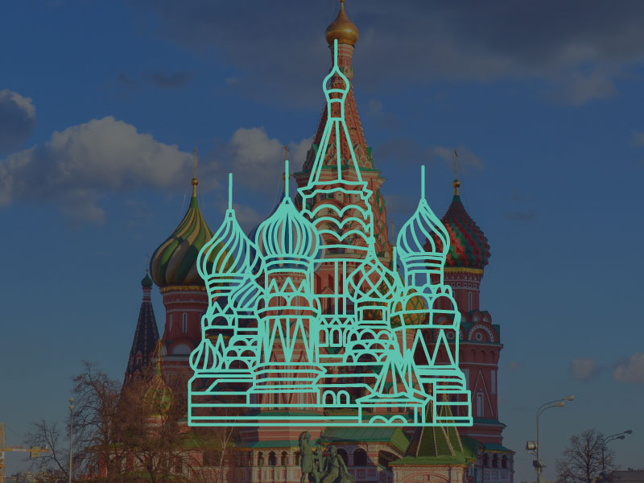

St. Basil’s Cathedral
The Cathedral of Vasily the Blessed, commonly known as Saint Basil’s Cathedral, is a church in Red Square in Moscow, Russia. The building, now a museum, is officially known as the Cathedral of the Intercession of the Most Holy Theotokos on the Moat or Pokrovsky Cathedral. It was the city's tallest building until the completion of the Ivan the Great Bell Tower in 1600.
The building is shaped as a flame of a bonfire rising into the sky, a design that has no parallel in Russian architecture. Dmitry Shvidkovsky, in his book Russian Architecture and the West, states that “it is like no other Russian building.
The church has been part of the Moscow Kremlin and Red Square UNESCO World Heritage Site since 1990.